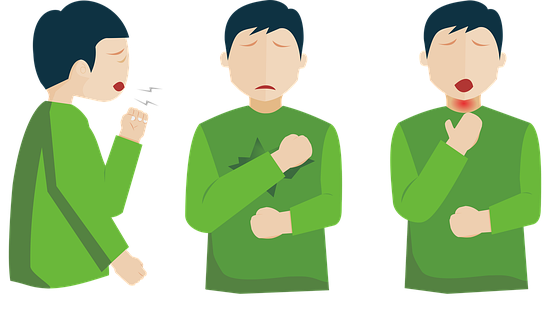

"Artist's rendering of what the SARS-CoV-2 virus would look like under a powerful microscope"
COVID-19 is the disease that is caused by the virus SARS-CoV-2, meaning Severe Acute Respiratory Coronavirus 2, and was first discovered in Wuhan, China, in December 2019. SARS-CoV2 is a member of the coronavirus virus family, members of which affect the upper respiratory tract, and include viruses such as the common cold, MERS (Middle East Respiratory Syndrome), and SARS, to which SARS-CoV-2 is closely related to. Coronaviruses are a large family, and there are hundreds of coronaviruses, most of which affect animals such as pigs, bats, and cats. Their name comes from the word “corona” meaning crown, as these viruses have many spike proteins that stick out of them. These spike proteins are the parts that attach to the cells of a host to allow the virus to replicate within the host’s cells, and antibodies protecting against coronaviruses often target the spike proteins. In rare cases, these viruses can be transmitted from animals to humans in what is called a “spillover event”, and the transmission of these viruses can cause diseases. Of the hundreds of viruses in this group, only 7 can affect humans. 4 of these viruses cause only mild or moderate symptoms, but the remaining 3 can have more severe, and sometimes fatal, symptoms.
SARS-CoV-2 is one of the 3 coronaviruses that can affect humans more seriously. COVID-19 is an enveloped virus, meaning that its genetic material is contained in an outer layer of proteins and lipids called the “envelope”. This envelope contains the spike proteins that are used by the virus to attach to human cells during infection. The disease caused by SARS-CoV-2 was highly contagious, and it spread through many regions of China and was brought to countries around the world by travelers from impacted regions. By March 2020, the virus had been deemed a pandemic by the World Health Organization (WHO), indicating that it was “...occurring worldwide, or over a very wide area, crossing international boundaries and usually affecting a large number of people”(Kelly 540). In many countries, travel to and from other countries was restricted, and many institutions, businesses, and amenities were closed in many regions to limit the spread of the virus. Preventative measures such as masking, and the development and distribution of vaccines allowed these things to reopen, but they still close during spikes in infections to limit the spread of the virus.
So how does COVID-19 spread, and why is it so infectious? COVID-19 is primarily transmitted through the respiratory droplets of an infected person, especially when the person coughs or sneezes, and the disease is transmitted when another person inhales or is exposed to these droplets. Transmission can also occur if a person touches a surface contaminated by these droplets and then touches their eyes, nose, or mouth, but the risk of transmission through surfaces compared to airborne transmission, direct contact, and transmission by droplets. . It is also possible for COVID-19 to spread from humans to other animals through close contact, and examples have included companion animals and pets such as cats and dogs, minks on mink farms, animals at zoos, and wild white-tailed deer in many US states.
COVID-19 has a wide range of symptoms depending on the severity of the illness, and symptoms tend to emerge 2-14 days after the infection. Symptoms can include but are not limited to…
If you or someone else shows these signs, seek medical care…
COVID-19 shares many symptoms with the flu, but spreads more easily and can be more severe. Since their symptoms are so similar, testing is often required to confirm a diagnosis of COVID-19.
Illustration of a person showing COVID-19 symptoms
Factors such as age and underlying health conditions such as “...diabetes, hypertension, asthma, chronic lung disease, severe heart conditions, chronic kidney disease, obesity or a weakened immune system”(Public Health Agency of Canada) can put people at a greater risk of suffering more serious consequences from COVID-19. However, this does not mean that young and healthy people cannot suffer serious symptoms as well.
Most people affected by COVID-19 completely recover within a few weeks, but some people suffer lingering effects long after they have recovered. These effects are often called “long COVID”, and while older people and people with underlying health conditions are the most likely to experience long COVID, young and otherwise healthy people can be affected as well.
Symptoms that linger over time include…
These symptoms are often worsened by physical and mental activities
COVID-19 is primarily transmitted through the respiratory droplets expelled from infected people when they cough, sneeze, speak, etc. Masks primarily reduce the transmission of COVID-19 by blocking most of the respiratory droplets emitted by the wearer, and are especially useful for those who are asymptomatic or presymptomatic, as they may not know they are infectious. Masks also reduce the inhalation of respiratory droplets by filtering and blocking them from reaching the wearer. This combination of source control limiting the spread of the virus from the wearer and protection from the wearer through filtration reduces transmission when masks are widely used among the public.
Our immune system consists of many organs, tissues, and cells, and our immune cells must learn to recognize foreign cells and proteins to respond against them. Blood contains both red blood cells, which carry oxygen to our tissues and organs, and white blood cells, which fight infections. When the immune system recognizes these antigens, immune cells called macrophages digest germs or dead and dying cells, leaving behind parts of these foreign germs called “antigens”. Each type of virus or bacteria is marked by their own type of antigen, and these antigens induce the production of antibodies that attack the germs. B-lymphocytes are white cells that produce antigens to attack virus pieces left by the macrophage’s digestion, and T-lymphocytes attack infected body cells. After an infection, the body will keep a few T-lymphocytes called “memory cells” that respond quickly if the body encounters the same virus. The B-lymphocytes are then able to quickly produce antibodies to respond to the infection. However, the immune system is very specific, and may not respond as effectively to a variant compared to the virus or bacteria it previously recognized.The first time that someone is infected with COVID-19, it may take many days or weeks for the body to respond and get over the infection, but when the body learns how to respond to the infection, it responds much more quickly and effectively if it is infected again.
Different types of vaccines use different methods to offer protection, but all vaccines induce an immune response so that the body has “memory” T-lymphocytes, and B-lymphocytes that produce the correct antibodies. There are 3 main types of vaccines against COVID-19: mRNA vaccines, viral vector vaccines, and protein subunit vaccines.
While many vaccines use either inactivated or weakened germs to trigger an immune response, mRNA vaccines work by instead giving the body instructions to make a harmless protein or piece of protein that triggers an immune response. mRNA vaccines are injected into the upper arm, and the mRNA enters the body to instruct the cells to create pieces of spike proteins. The mRNA is broken down by the cells after it performs its function. The spike proteins are displayed on the surface of the cells, inducing the immune response, and teaching our bodies how to respond to COVID-19. mRNA vaccines cannot infect someone with the virus, because they do not use a live virus, and both the mRNA and spike proteins are quickly broken down by the body. mRNA vaccines have been studied for decades, but were only recently used among the public, and both the Moderna and Pfizer vaccines are mRNA vaccines.
Viral vector vaccines used modified viruses called vector viruses to deliver its instructions to cells. Viral vector vaccines are injected through the upper arm, and COVID-19 viral vector vaccines do not actually use the SARS-CoV-2 virus. The vector virus sends instructions to the cells to produce spike proteins of the SARS-CoV-2 virus, which are then displayed on the surface of these cells. The spike proteins then trigger an immune response, fighting what the body thinks is an infection and learning how to respond to the actual virus, without inducing the illness. Viral vectors were first created in the 1970s, and were used to develop vaccines for Ebola, and are researched for use against Zika, flu, and HIV. The viral vector vaccines approved for use in Canada are the Oxford-Astrazeneca and Johnson & Johnson vaccines.
Instead of giving the body cells instructions to produce the spike proteins of SARS-CoV-2, protein subunits instead use other cells. Bacterial, yeast, mammalian, or insect cells are given the instructions to produce the spike proteins, and the cells then produce large amounts of these proteins. The proteins are then extracted from the cells and purified for use in vaccines, some of which have adjuvants added, which help create a stronger and longer lasting protection. Once a patient is vaccinated, their bodies will recognize the spike proteins as foreign triggering an immune response. The Novavax Nuvaxovid vaccine is the sole protein subunit vaccine approved for use in Canada.
As viruses replicate, changes in the virus’ genetic code called mutations frequently occur, and the SARS-CoV-2 virus has formed and will continue to form genetic lineages. Mutations occur frequently, but they seldom cause changes significant enough to impact its behavior and characteristics. These changes and mutations can change the behavior of the virus, and can impact its transmissibility, its severity, and the effectiveness of treatments developed against it. These mutated viruses are called “variants” and can behave differently from other forms of the virus, but are still SARS-CoV-2. The spike proteins are an important part of the virus, as they allow the virus to attach to and replicate in human cells, so many antibodies that protect against COVID-19 recognize and target the spike proteins. Variants often have changes in their spike proteins and these changes may make it more difficult for the antibodies to target the virus, so scientists constantly monitor changes to the virus that alter its spike proteins.
All discovered variants are monitored by scientists, but the variants are classified into Variants Being Monitored (VBM), Variants Of Interest (VOI), Variants Of Concern (VOC), and Variants Of High-Consequence (VOHC). Some of these variants may be more transmissible and severe than others, but even if a variant has less severe symptoms, an increase in transmissibility can still increase hospitalizations and strain a region’s healthcare system.
VBMs are variants that potentially or clearly impact the effectiveness of existing treatments and countermeasures or potentially or clearly have an increased transmissibility or severity, but are only circulating at low-levels in the United States. Variants of other classifications can be changed to VBM classification if they are circulating at low levels, and do not significantly impact public health. Conversely, their status could also be upgraded if monitoring shows that they better fit the requirements of other classifications. Current VBMs in the United States include these variants…
VOIs are variants that bear characteristics associated with reducing the effectiveness of treatments and vaccines, or indicate that it will likely have increased transmissibility or severity. VOIs may require stronger public health measures to control their spread. There are no variants currently designated as VOIs.
VOCs are variants that are shown with evidence to have increased transmissibility or severity, or decreased effectiveness of existing treatments and antibodies created by past infection or vaccination. VOCs may require stronger public health measures to limit their circulation, and treatments and vaccines may need to be modified to be more effective against these variants. Current VOCs in the United States include…
VOHCs are variants with clear evidence showing that existing public health measures have reduced effectiveness compared with previous variants. There are no variants in the United States currently designated as VOHCs.
The WHO currently uses letters of the Greek alphabet to name variants because the letters are easy to pronounce, and do not associate the variant with a specific group of people or location so as to be non-stigmatizing.
COVID-19 has had a huge impact in Canada and worldwide, infecting over 420 million people and causing around 5.9 million deaths worldwide (Worldometer), with many more deaths potentially indirectly caused by the pandemic. The pandemic has heavily impacted the economy with lockdowns and other public health measures, but beyond the statistics, COVID-19 has had an intangible impact on people. COVID-19 has worsened mental health and prevented people from living experiences and accessing resources they previously would have been able to.
In Canada, COVID-19 has decreased immigration and delayed family planning. The economy has taken hits early in the pandemic and during lockdowns, with economic activity still remaining below what it was prior to the pandemic. Employment rates have recovered, but there are still many job vacancies, indicating that the demand for jobs is not being met with the same supply of workers. The costs of creating products has also increased, causing inflation to rise to its highest levels since 2003, and overtaking wage growth, putting pressure on businesses and consumers. COVID-19 has increased stress levels, especially among women, people age 35-44, 2SLGBTQ+, and people living with children under the age of 15, with almost half of all Canadians considering themselves to have worse mental health compared to before the pandemic. Overdose and poisoning deaths have also increased during the pandemic, and many who experienced overdoses were lower income and had lower levels of education.
Despite the troubles of the pandemic, many Canadians still remain hopeful for the future, with 42% of Canadians believing that life will be better next year, especially among people aged 15-24, males, and visible minority groups. 48% of Canadians believe that life will remain the same next year, especially among older Canadians above age 65.
A collage of world flags in the shape of a the SARS-CoV-2 virus
Sources used in the making of the website.